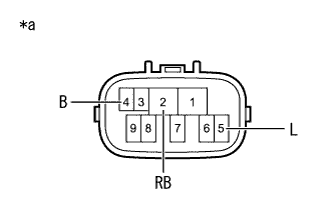

DTC P0617/43 Starter system (High) |
| DTC No. SAE/TCCS | DTC detection conditions
| Inspection site |
|---|---|---|
| P0617/43 |
|
|
| Step 1 | Tascan Data Read (Starter signal) |
Connect SST (Tascan) to DLC3.
Ig ON.
Use SST (Tascan) to perform the operation according to the screen display, and select [ECU Date Tamonita]-[Starter Signal].
| Item name 〔symbol〕 | Item explanation/display range | Standard value | remarks (Main inspection items in the event of an abnormality) |
|---|---|---|---|
| Starter signal [STA] |
| OFF → ON IG ON → Cranking | STA voltage |
Read the Starter signal while driving.
| Inspection condition | Tascan display contents |
|---|---|
| While driving a vehicle (1000rpm or more, 20km/h or more) | OFF |
| result | Destination |
|---|---|
| normal | A |
| Abnormality | B |
|
| ||||
| A | ||
| ||
| Step 2 | Neutral Start Switch ASSY single check (short circuit inspection) |
|  |
Cut the connector B9 of the Neutral Start Switch Assy.
Use SST (Toyota Electrical Tester) to measure resistance between terminals.
| Inspection terminal | Inspection condition | Reference value |
|---|---|---|
| 4 (B) --5 (L) | Always | 10 kΩ or higher |
| 2 (RB) --5 (L) | Always | 10 kΩ or higher |
| *a | Connector non -connection status (Neutral Start Switch Ass) |
|
| ||||
| OK | |
| Step 3 | Wire harness or connector inspection (neutral start switch Ass -ST Relay -Engine Control Computer) |
Repair or replace the wire harness.
| to the next | |
| Step 4 | Diag code erasure |
Connect SST (Tascan) to DLC3.
Ig ON.
Follow the screen display of SST (Tascan) to delete the diag code.(The point isreference)
| to the next | |
| Step 5 | Diag code reconfirmation |
Run for more than 20 seconds at 20km/h or more.
Connect SST (Tascan) to DLC3.
Ig ON.
Check the diag code according to the screen display of SST (Tascan).(The point isreference)
| result | Destination |
|---|---|
| P0617/43 is not output | A |
| P0617/43 is output | B |
|
| ||||
| A | ||
| ||